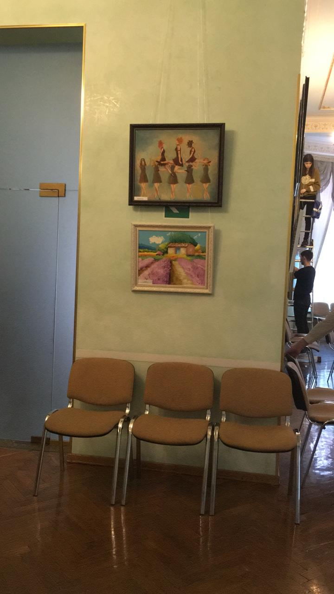
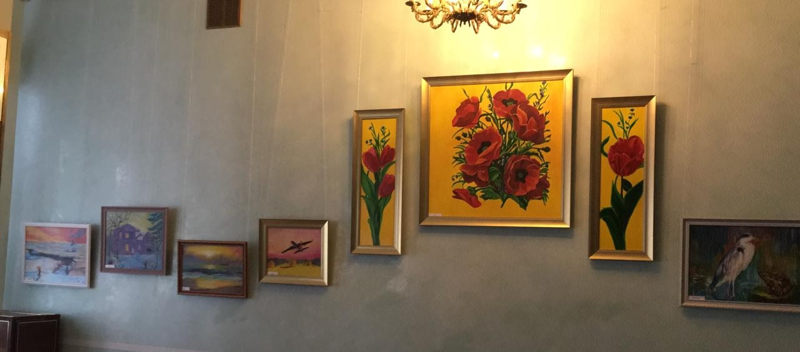
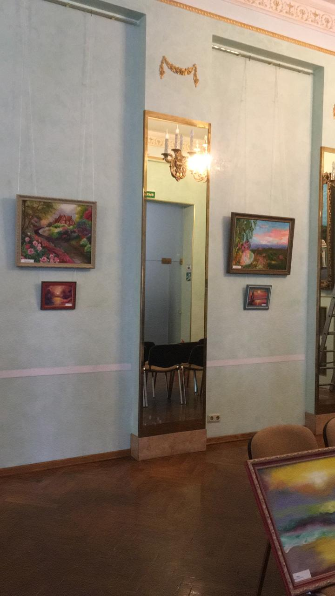
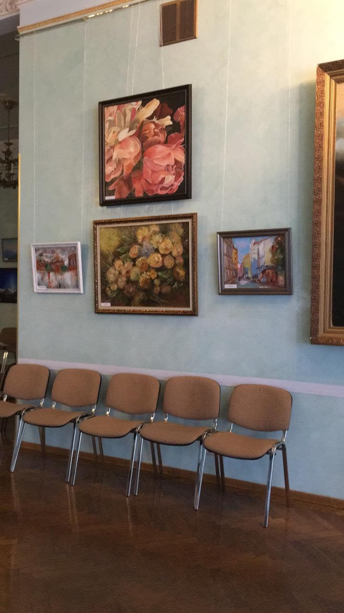
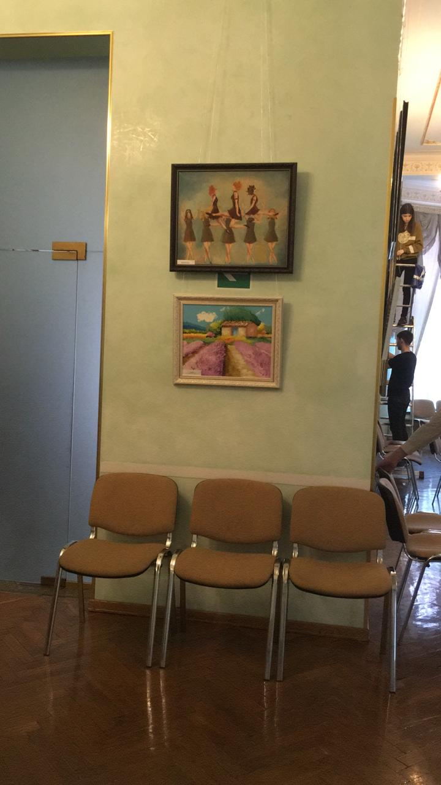
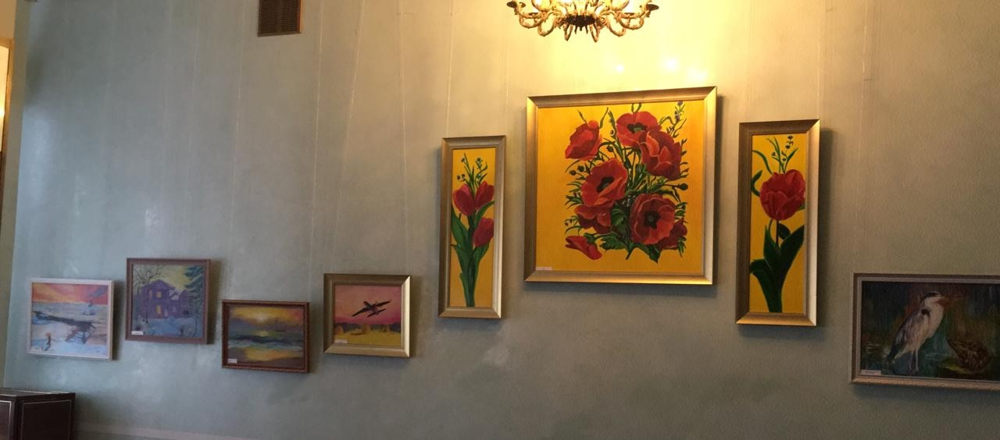
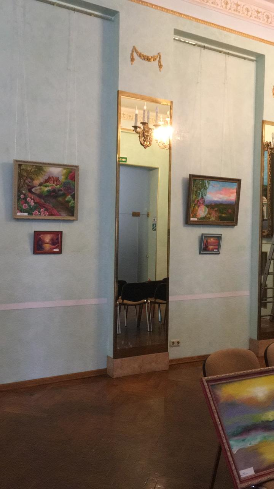
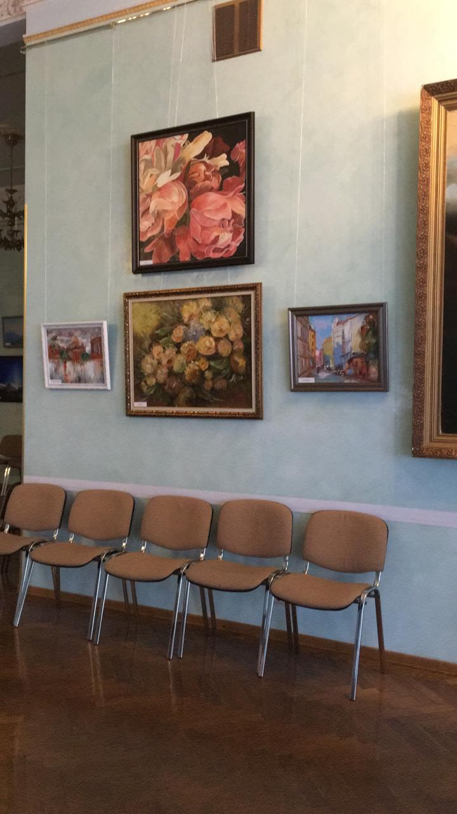

Добро пожаловать!
Пресс‑релиз
Художница Оксана Азарова, выпускница знаменитого МГХПА им. С.Г. Строганова факультета дпо, продолжает удивлять мир искусства своим уникальным подходом, объединяющим классические традиции с современными экспериментами.
Окончив обучение в МГХПА им. С.Г. Строганова, Оксана получила прочную базу в классическом изобразительном искусстве, что позволило ей развить индивидуальный стиль и осваивать новые творческие горизонты. Сегодня она уверенно работает в различных техниках – от классической живописи до смешанных техник, используя экспериментальные методы, которые раскрывают глубину и многогранность её видения.
В её работах ощущается живость и динамика, каждая картина становится диалогом между традиционными приемами и современными формами самовыражения. Благодаря богатому образованию и стремлению к постоянному развитию, творчество Оксаны Азаровой выделяется своей экспрессивностью, гармонией цвета и композиции, а также способностью затрагивать самые актуальные темы современности.
Художница активно участвует в выставках, где её работы получают высокую оценку ценителей искусства. Её творческий путь – это постоянное стремление к эксперименту и поиску новых решений, что делает её вклад в современное искусство особенно значимым.
Каждая выставка станет уникальной площадкой для диалога между традиционными художественными формами и новаторскими подходами, позволяющими раскрыть многогранность творчества художницы.
 






